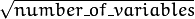

Random trees have been introduced by Leo Breiman and Adele Cutler: http://www.stat.berkeley.edu/users/breiman/RandomForests/ . The algorithm can deal with both classification and regression problems. Random trees is a collection (ensemble) of tree predictors that is called forest further in this section (the term has been also introduced by L. Breiman). The classification works as follows: the random trees classifier takes the input feature vector, classifies it with every tree in the forest, and outputs the class label that received the majority of “votes”. In case of a regression, the classifier response is the average of the responses over all the trees in the forest.
All the trees are trained with the same parameters but on different training sets. These sets are generated from the original training set using the bootstrap procedure: for each training set, you randomly select the same number of vectors as in the original set ( =N ). The vectors are chosen with replacement. That is, some vectors will occur more than once and some will be absent. At each node of each trained tree, not all the variables are used to find the best split, but a random subset of them. With each node a new subset is generated. However, its size is fixed for all the nodes and all the trees. It is a training parameter set to  by default. None of the built trees are pruned.
In random trees there is no need for any accuracy estimation procedures, such as cross-validation or bootstrap, or a separate test set to get an estimate of the training error. The error is estimated internally during the training. When the training set for the current tree is drawn by sampling with replacement, some vectors are left out (so-called oob (out-of-bag) data ). The size of oob data is about N/3 . The classification error is estimated by using this oob-data as follows:
For the random trees usage example, please, see letter_recog.cpp sample in OpenCV distribution.
References:
- Machine Learning, Wald I, July 2002. http://stat-www.berkeley.edu/users/breiman/wald2002-1.pdf
- Looking Inside the Black Box, Wald II, July 2002. http://stat-www.berkeley.edu/users/breiman/wald2002-2.pdf
- Software for the Masses, Wald III, July 2002. http://stat-www.berkeley.edu/users/breiman/wald2002-3.pdf
- And other articles from the web site http://www.stat.berkeley.edu/users/breiman/RandomForests/cc_home.htm
Training parameters of random trees.
The set of training parameters for the forest is a superset of the training parameters for a single tree. However, random trees do not need all the functionality/features of decision trees. Most noticeably, the trees are not pruned, so the cross-validation parameters are not used.
The constructors
| Parameters: |
|
|---|
The default constructor sets all parameters to default values which are different from default values of DTrees::Params:
RTrees::Params::Params() : DTrees::Params( 5, 10, 0, false, 10, 0, false, false, Mat() ),
calcVarImportance(false), nactiveVars(0)
{
termCrit = cvTermCriteria( TermCriteria::MAX_ITERS + TermCriteria::EPS, 50, 0.1 );
}
The class implements the random forest predictor as described in the beginning of this section.